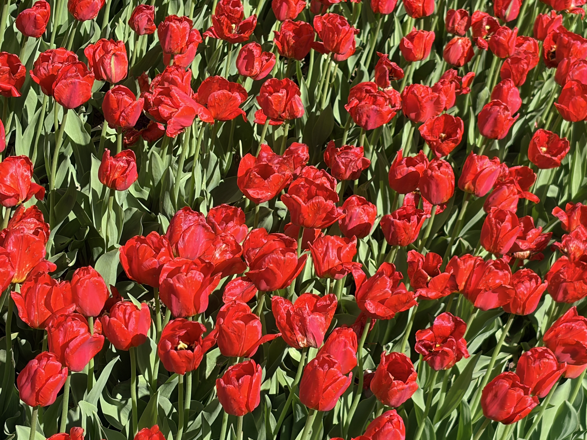
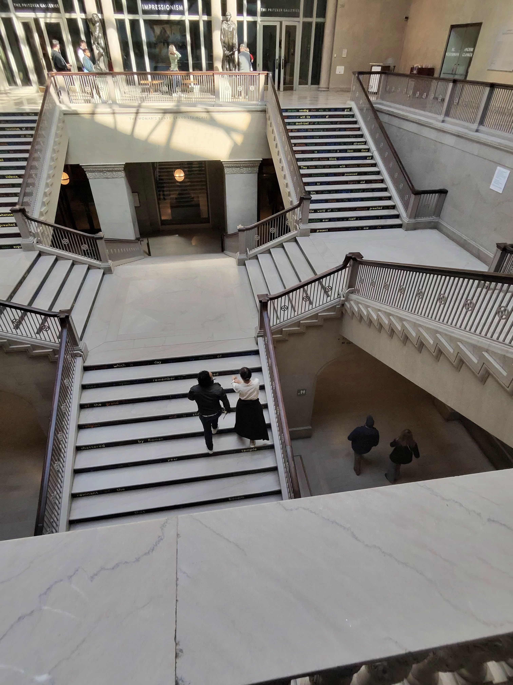
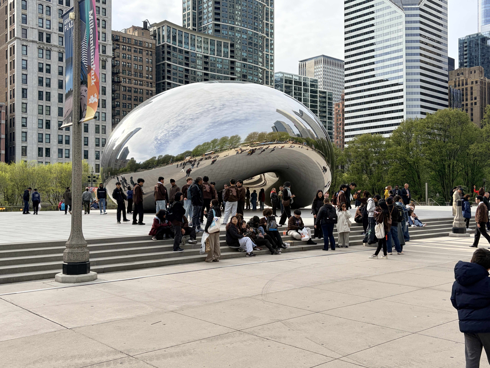
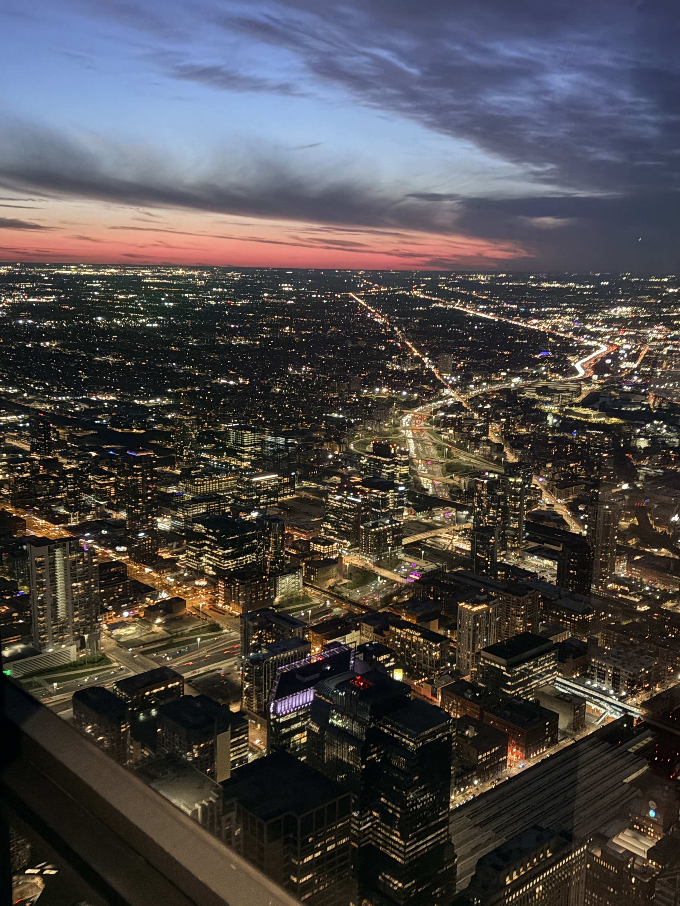
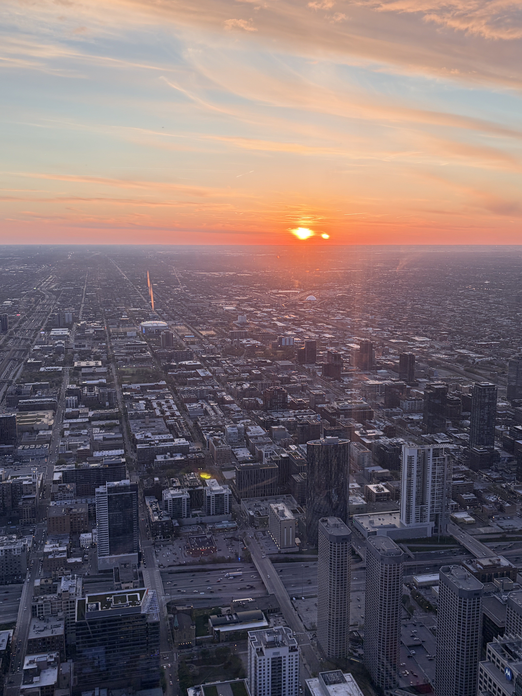
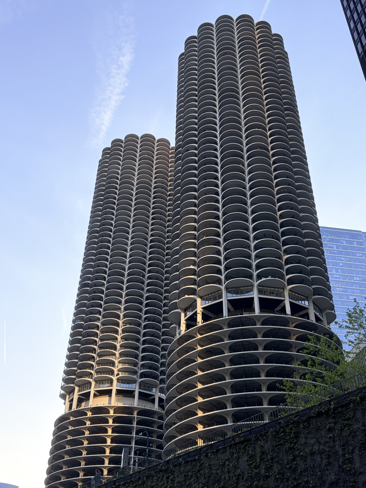
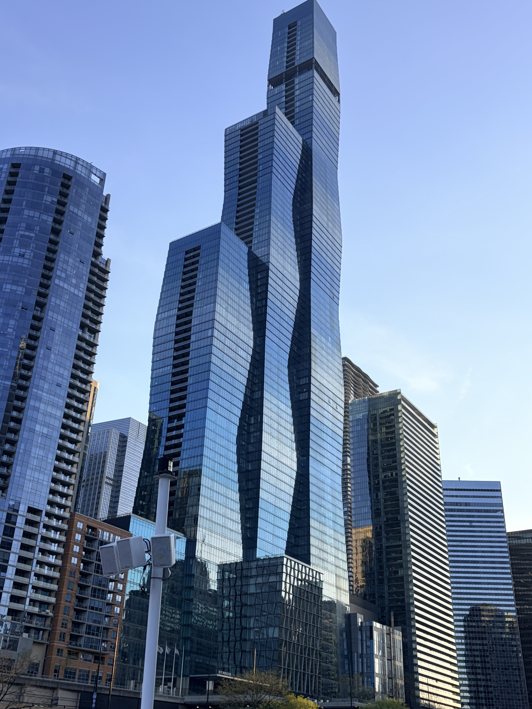

The Road Begins at Eleven
April 19, 2026 | Boston → Letchworth → Presque Isle → Holland, Michigan
There's something magical about beginning a road trip after sunset — the city still buzzing behind you, highway lights flickering rhythmically along the road, and endless miles of adventure stretching beyond the windshield.
We left Boston right at eleven, the kind of departure that feels less like a start and more like slipping quietly into the night. The Mass Pike carried us west as Worcester drifted past in a wash of amber lights, and soon enough, Massachusetts gave way to New York. The hours unfolded gently—playlists rotating, podcasts fading in and out, occasional conversation breaking up long stretches of silence. Outside, the April air stayed cool and crisp against the windows, while coffee thermoses did their steady, necessary work inside the car.
Letchworth State Park: The Grand Canyon of the East
Letchworth State Park — often called the "Grand Canyon of the East" — is the kind of place that naturally slows you down. Carved by the Genesee River over thousands of years, its deep canyon walls rise dramatically on either side, holding mist in the early morning air. We stepped out into the chill and followed the rim trail, watching the landscape wake up with us.
The three waterfalls revealed themselves one by one in the soft morning light. Upper Falls thundered with spring melt, powerful and constant; Middle Falls stretched wide and cinematic, framed by the canyon walls; and Lower Falls shimmered more quietly below a natural stone bridge, almost hidden if you weren't looking closely. It was one of those stops where time feels like it pauses for a moment — not because you planned it, but because the place quietly demands it.
Presque Isle State Park
Our next stop was the slim, curved peninsula of Presque Isle State Park in Pennsylvania. The land stretches into the lake like a gentle hook, wrapping into the cold grey-blue water. By the time we arrived, the afternoon had already started to soften into golden light. We headed straight to Gull Point, the quiet sandy tip of the park, and settled in to watch the day slow down.
Sunset here felt like a show in slow motion. The lake changed color in layers — soft apricot, then pink, then a deep plum that slowly melted into the horizon. A few pelicans drifted overhead in formation, and the breeze coming off the water carried that fresh, slightly wild lake smell that instantly makes you feel far from everything.
We rolled into Holland, Michigan just before midnight, checked into the hotel, and collapsed in that perfect kind of exhaustion that comes after a full day of travel done right.
A Town Dressed in Tulips
April 20, 2026 | Holland, Michigan → Chicago, Illinois
Holland, Michigan in April feels like walking straight into a painting that hasn't realized it's being watched. The town doesn't just decorate for spring — it overflows with it. Every street, park, and roadside median bursts into color, tulips everywhere in unapologetic abundance: vivid crimson, soft butter yellow, deep royal violet, and those unmistakable coral-pink blooms that feel almost engineered for maximum impact.
Tulip Time Festival

Tulip fields in Holland, Michigan during the Tulip Time Festival
Tulip Time, the annual festival that transforms this lakeside city every spring, was in full swing. We followed the parade route before the morning crowds thickened, past Dutch colonial storefronts and wooden-shoe workshops. On Centennial Park, children in traditional Klompen costumes were rehearsing their wooden-shoe dances with an earnestness that was both charming and completely serious. We bought stroopwafels from a street stall and ate them warm, caramel threading between each bite.
Windmill Island Gardens anchored the morning properly: a genuine 18th-century working windmill called De Zwaan — the Swan — imported from the Netherlands in 1964, rising above a canal fringed with tulip beds as far as the eye could see. We climbed partway into the mill to watch its wooden gears turn, then sat on the grass below it for a long while, doing nothing useful at all.
Arriving in Chicago
The drive across Indiana was wide, flat, and refreshingly unshowy — endless stretches of prairie sliding past as the road carried us forward with an easy, unhurried rhythm. By late afternoon, the Chicago skyline finally rose on the horizon, that unmistakable first reveal emerging from the plains like a bold exclamation: steel and glass standing tall against an immense Midwestern sky.
We checked into the hotel, dropped our bags, and made our way straight to the Art Institute of Chicago, squeezing in the final couple of hours before closing with no real agenda — just drifting from gallery to gallery. Inside, the museum unfolded like a quiet conversation across centuries. American Gothic greeted us with its familiar, almost unsettling stillness. A Sunday on La Grande Jatte pulled us in twice over — first from a distance as a serene Parisian afternoon frozen in time, then up close where it dissolved into dots and strokes, revealing its hidden structure.

The Swami Vivekananda memorial in Chicago
Under the Lake, Under the Cloud
April 21, 2026 | Chicago — Shedd Aquarium · Millennium Park · Downtown
Chicago's second day was an exercise in contrasts: first we went below the waterline, into the cool blue world of the Shedd Aquarium, then we emerged into the full theatrical brightness of Millennium Park, where the city reflects itself back at you in silver.
Shedd Aquarium
Shedd Aquarium feels like stepping into another world — one that's underwater, glowing, and full of life from the very start. Inside, one of the coolest spots is the Amazon Rising exhibit. It looks like a flooded jungle, with huge fish called arapaima slowly drifting past tangled tree roots. It honestly feels like you're peeking into a secret world hidden deep in the rainforest.
But the real highlight is the Wild Reef. Imagine a giant ocean tank where sharks glide right above you and stingrays move like they're flying underwater. We stayed there for a long time just watching a single shark swim in calm circles — it's surprisingly relaxing to see something so powerful move so smoothly without rushing anywhere.
Cloud Gate: The City in a Mirror

Cloud Gate — "The Bean" — reflecting the Chicago skyline
In the afternoon, we made our way to Cloud Gate — better known across Chicago as "The Bean," though the city wears that nickname with a kind of knowing smile. Anish Kapoor's mirrored sculpture needs no introduction, yet still manages to outdo expectation in person. Its polished steel surface doesn't simply reflect the city — it reshapes it. The skyline bends into arcs of silver, pedestrians stretch and compress into moving silhouettes, and the sky folds back into itself until horizon and reflection become indistinguishable.
Standing beneath it, the experience becomes almost cinematic. The underside — a smooth, concave vault — pulls the entire city into a single floating frame, as if Chicago has been temporarily suspended and turned inward. What's most striking is the way people respond to it. Children instinctively press closer, laughing as their reflections split and multiply across the curved surface, turning themselves into part of the artwork.
The rest of the afternoon unfolded on foot — unhurried, unplanned city walking, the kind that turns aimless wandering into its own quiet form of discovery. We drifted down Michigan Avenue, where historic stone façades stand directly across from sleek glass towers, neither trying to outshine the other. The city doesn't choose between old and new here — it simply lets them coexist.
Skydeck 360



Sweeping views of Chicago from Skydeck 360
Field Museum, Piers, and the Mother Road
April 22, 2026 | Chicago — Field Museum · Navy Pier · Route 66
If Day Three was about water and reflection, Day Four was about deep time — the Field Museum's thirteen billion years of natural history compressed into a single building — and then, in the evening, the city's own architectural history narrated from the water.
Inside Deep Time: The Field Museum

Inside the Field Museum of Natural History
Field Museum of Natural History is the kind of place where time immediately starts to feel elastic. From the entrance onward, there's a quiet awareness that no single visit is ever enough — every hall opens into another world, and every turn feels like you're choosing what not to see.
And then, at the center of the museum's main hall, everything naturally pulls toward Sue (Tyrannosaurus rex). She is not just displayed there — she dominates the space. At 40 feet long and built from one of the most complete Tyrannosaurus rex skeletons ever discovered, SUE carries a presence that feels almost architectural, as if the entire hall was designed around her scale rather than her being placed within it.
The Chicago Riverwalk & Architecture River Cruise
Late afternoon on the Chicago Riverwalk is one of those quietly satisfying city experiences that doesn't announce itself as special — but absolutely is. Tucked below street level along the river's edge, it stretches between Michigan Avenue and Lake Shore Drive, offering a different rhythm of Chicago entirely, one that moves with water instead of traffic.


Aboard the Chicago Architecture River Cruise
The evening belonged to the Chicago Architecture River Cruise, a 75-minute journey that feels less like a tour and more like moving through an open-air museum where the exhibits rise on both sides of the water. What makes Chicago so compelling from this angle is how clearly its architectural history reads in sequence. The early, heavy masonry of the Chicago School gives way to the vertical confidence of the skyscraper era, and then to glass towers that reflect everything around them rather than compete with it.
We stood in front of the "Start of Route 66" marker — the original eastern terminus, surprisingly modest, just a simple sign on a street corner. Yet in the quiet of the night, it carried a weight far beyond its size. From this very spot, the legendary highway once stretched all the way to Santa Monica, California — 2,448 miles of road, towns, and changing landscapes.
From Chicago to Pennsylvania
April 23, 2026 | A Journey Through America's Heartland
Leaving Chicago felt like closing a book before you're quite ready to. The skyline shrank in the rearview mirror with characteristic reluctance — even retreating, it takes up more visual space than most cities manage at their best.
Interstate 80 across Indiana and Ohio is the definition of straightforward, no-nonsense driving — not conventionally scenic, yet quietly grand in its own way. The landscape stretches out in long, level runs of farmland and open sky, where the horizon feels unusually distant and grain silos rise like markers of small towns spaced carefully along the route, every couple of miles a brief reminder of life between the exits.
We made steady progress eastward, passing through the outskirts of Cleveland and continuing across the Pennsylvania border, the rhythm of the road staying constant and unhurried. The only pause came at a roadside diner outside Youngstown, where we stopped for gas and lunch. Inside, the coffee was dark, strong, and endlessly refilled before we even had the chance to ask — the kind of place that doesn't rush you, because the road already has its own pace waiting outside.
Hershey received us that night with a faint, almost playful sweetness in the air — the kind that seems to hang over the town itself. The Hershey Company is often credited with this signature scent, carried by its factory ventilation that locals say runs day and night, drifting chocolate notes across streets, intersections, and quiet neighborhoods.
History, Chocolate, Outlets, and Home
April 24, 2026 | Gettysburg → Hershey → King of Prussia → Boston
The last day of a road trip has its own particular emotional weather — a brightness tinged with mild pre-emptive nostalgia, the trip not yet over but already being remembered.
Gettysburg: A Journey Through Silence, Sacrifice, and Memory
Gettysburg, Pennsylvania, doesn't announce itself loudly. The roads narrow, the buildings soften into brick and wood, and the landscape slowly opens into rolling fields that look almost ordinary—until you know what happened here.
I arrived early in the morning, when the mist still clung to the grass like it wasn't ready to let go of the night. The town felt calm in a way that made you lower your voice without thinking. But Gettysburg is not calm. It is quiet for a reason. This is where the turning point of the American Civil War unfolded in 1863.
The heart of the experience is the Gettysburg National Military Park. It doesn't feel like a park in the casual sense. It feels like a preserved breath—held for more than a century. Standing on Cemetery Ridge, the land stretches out in a way that makes distances feel personal. You can see why commanders made decisions that seemed strategic on paper but devastating on the ground.
Hershey's Chocolate World
We devoted the next part of the morning properly to Hershey, letting the town set its own pace. Hershey's Chocolate World is exactly what it promises — an unapologetically enthusiastic celebration of the confection that defined the place. From the factory tour ride to the tasting experience, everything is designed with a kind of earnest joy. At the chocolate pairing counter, we were guided through single-origin cacao from Ghana, Peru, and Indonesia with the same careful attention usually reserved for fine wine.
The Final Stretch Home
By late morning, we were back on the Pennsylvania Turnpike, heading northeast toward home. The final stretch came as we set out at 8 PM, merging onto I-276 and then I-95 North, the road narrowing into that familiar ribbon through Delaware and New Jersey. Somewhere along the way, the George Washington Bridge rose out of the dark, and for a brief moment the Manhattan skyline appeared off to the south — distant, glowing, almost unreal in passing.
Connecticut slipped by in the late night, quiet and unremarkable in the best way. The Rhode Island border came and went without ceremony. Mile after mile dissolved into headlights, engine hum, and the steady rhythm of a road that had now become second nature.
And then, at around 2 AM, after roughly 2,100 miles and six days — after a Midwest sunset that stayed in memory longer than it should, a gorge carved by a river that never asked for permission, a lake that held sharks beneath its surface, and a city that kept building itself again and again in glass and steel — we arrived Home.
What the Trip Cost
Six days, two travelers, 2,100+ miles — a rough breakdown by category
What to Pack
Built for a spring road trip: waterfalls in the morning, city sidewalks by afternoon
Documents & Essentials
- Driver's license & registration
- Hotel & timed-entry confirmations
- Wallet, cards, some cash for tolls
- Phone charger & car mount
- Printed backup route / offline maps
Clothing
- Layers — cool mornings, mild afternoons
- Waterproof jacket or windbreaker
- Comfortable walking shoes
- One dressier outfit for dinners out
- Hat & sunglasses
Park & Outdoor Gear
- Sturdy shoes for canyon rim trails
- Small daypack
- Reusable water bottle
- Sunscreen & bug spray
- Binoculars for lake overlooks
Tech & Road-Trip Comfort
- Camera or extra phone storage
- Portable battery pack
- Downloaded playlists & podcasts
- Travel pillow & blanket for night driving
- Snacks & a good coffee thermos
Boston to Chicago Drive: Frequently Asked Questions
How long is the drive from Boston to Chicago?
Driving directly from Boston to Chicago covers roughly 980-1,000 miles and takes about 15-16 hours behind the wheel, depending on your route and traffic. Most drivers split it into two days rather than pushing straight through.
What is the best route to drive from Chicago to Boston?
The fastest way is I-90 East through Ohio, Pennsylvania, and New York into Massachusetts. For a scenic alternative, detour through New York's Finger Lakes region to see Letchworth State Park, or hug the Lake Erie shoreline to stop at Presque Isle State Park in Pennsylvania — both featured on our route below.
How many days should I plan for a Boston to Chicago road trip?
A direct drive can be done in one long day or split comfortably across two. If you want to add scenic stops — Letchworth State Park, Presque Isle, or Holland, Michigan during Tulip Time — plan for anywhere from 3 to 6 days, which is the pace we took on this trip.
What's a good halfway stopping point between Boston and Chicago?
Erie, Pennsylvania or Cleveland, Ohio both sit roughly at the midpoint and make sensible overnight stops. If you want a scenic detour instead of a highway stop, Presque Isle State Park in Erie is a worthwhile break from the road.
What are the best stops between Boston and Chicago?
Our favorites from this trip: Letchworth State Park in New York (the "Grand Canyon of the East"), Presque Isle State Park on Lake Erie in Pennsylvania, and Holland, Michigan — especially in spring during Tulip Time. Erie and Cleveland work well as overnight stops if you'd rather split the drive than detour.
Is there a good 7-day Boston to Chicago itinerary?
Yes — stretch this same route to a week by adding an extra night in Chicago or a slower pace through the Finger Lakes. A 7-day version gives you breathing room for Letchworth, Presque Isle, and Holland on the way out, three full days in Chicago, and an unhurried return through Gettysburg and Hershey.
What are the best things to do in Holland, Michigan?
Time it with the Tulip Time Festival in April if you can — the whole town turns into a sea of color. Beyond the tulips, Windmill Island Gardens has a genuine 18th-century working Dutch windmill, and downtown is worth a walk for Dutch storefronts and fresh stroopwafels.
What's it like driving from Boston to Chicago?
Boston to Chicago driving covers roughly 980-1,000 miles, mostly along I-90 West through Massachusetts, New York, Pennsylvania, Ohio, and Indiana. It's a straightforward interstate drive that can be done nonstop in 15-16 hours, though most drivers split it across two days or add scenic detours like the ones on this route.
How long does it take to drive from Chicago to Boston?
Driving from Chicago to Boston takes about 15-16 hours nonstop, covering roughly 980-1,000 miles along I-90 East through Indiana, Ohio, Pennsylvania, and New York. Most people split the Chicago to Boston drive into two days, though it can be done as a single long push if needed.
Chicago or Boston — which is better to visit?
Chicago and Boston offer different strengths: Chicago has a bigger downtown skyline, lakefront parks, world-class museums like the Field Museum and Art Institute, and deep-dish food culture, while Boston offers Revolutionary War history, a walkable historic core, and easy access to New England. Many travelers, including on this route, choose to visit both by road-tripping between them rather than picking just one.